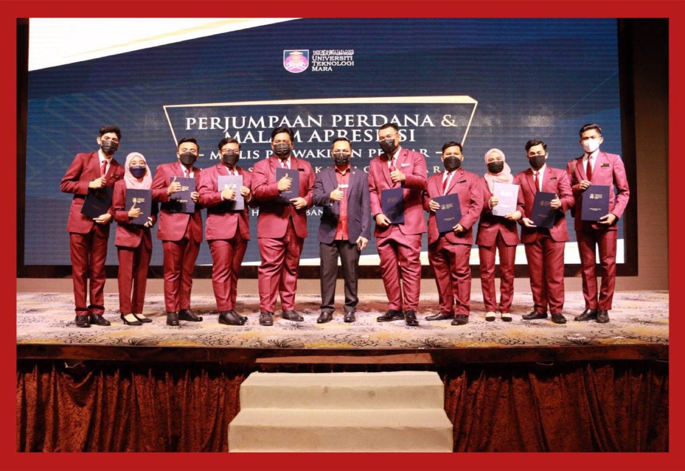
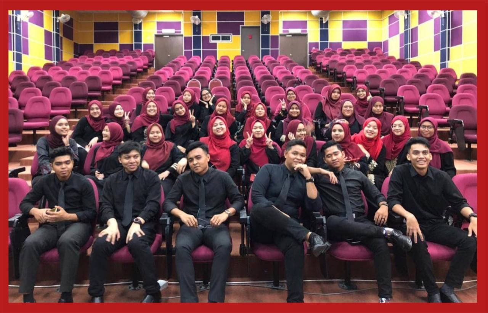

Experiences

The Student Representative Council (MPP) is widely recognised as the top student group at the university level. Many aspects of welfare that I and the student representative council have highlighted during my tenure as a student representative council representing the information management faculty of UiTM Kelantan Branch, because that has become an essential function of the MPP, have been highlighted during my tenure as MPP. We confront far too many difficulties and impediments. But all we accomplished was to pave the way for us to fight for the students. The most difficult issue for us is to take the lead in this Covid-19 epidemic. Leadership is perhaps 90 percent online. This ties up with our tagline, "Student Leadership Towards New Norms".
I owe a million thanks to the Debate & Speech Club Association for providing me with so much advice and honing my professional debate skills. I learnt so much that I qualified and won the Eastern Zone Consumer Debate Competition Champion as well as the Best Overall Debator Award in the competition. "Everyone can debate and talk, but not everyone is able to defend their reasons and words," said one coach.

If the committee members devote their complete devotion and attention to the club, a fantastic organisation will be developed. Whatever occurs, no one can find a pretext to sideline the club, since the secretariat line was applied to us by the then-club president. The truth is that through collaborating, we may not only learn how to run the organisation, but we can also discover our own strengths and flaws. During that period, we will do our best to improve our flaws and become a better human being than we were the day before. This is because a great person does not point out the flaws of others, but rather corrects his own.